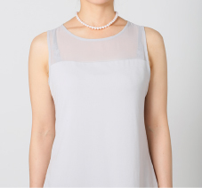
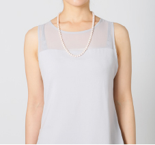
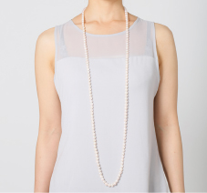

知識・メンテナンス 真珠の種類や品質評価項目について解説
ネックレスの種類と呼称
| カラー |  | ドッグカラーともいわれ、首輪のように首の中程でぴったり留まる長さのこと。３０～３３センチ程度の長さを示す。 |
|---|---|---|
| チョーカー | 現在、ネックレスの基本の長さとされており、40センチ～45 センチ前後が一般的。冠婚葬祭から日常使いまで一般に最も流通の多い長さです。 | |
| マチネ |  | チョーカーの１．５倍の長さとなる 60～65 センチ、本来は昼間用であったが夜会にも使用でき、フォーマル、ビジネス、カジュアルといろいとなシーンで着けられる便利な長さです。 |
| オペラ |  |
チョーカーの約２倍の 80～90 センチの長さのネックレスです。本来は夜会用。２連使用などアレンジがしやすく人気の長さです。 |
| ローブ |  | チョーカーの約３倍の 120～130cm の長さとなるロングネックレス。二連や三連でのご使用は勿論のこと長さを生かした様々アレンジが楽しめます。 |
COPYRIGHT©JAPAN PEARL PROMOTION SOSIETY,ALL RIGHTS RESERVED.
一般社団法人 日本真珠振興会
東京都中央区京橋 3-6-15 真珠会館 4F
TEL:03-3561-4355/FAX:03-3562-5270